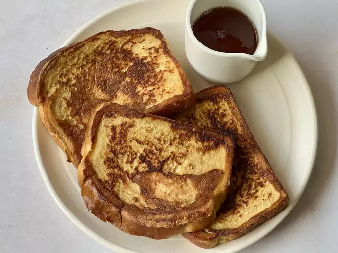

French Toast

Image Source
Description: Delicious French Toast covered in sugar and cinnamon and then fried
Ingredients
- 2 Eggs
- Some heavy cream or milk
- 1 or 2 tablespoon of sugar
- A tablespoon of cinammon
- Bread of one's choice (We went with brioche bread)
Directions
- Crack eggs and pour milk into deep baking pan
- Add sugar and cinammon to pan and then whisk everything together
- Dip a slice of bread into pan, making sure to do both sides of the slice
- Fry in a greased/nonstick frying pan until golden brown, making sure to flip occasionally
Back to recipes page